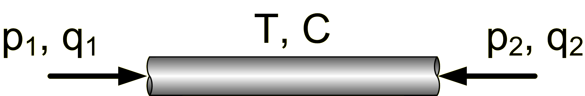

The Transmission Line Element Method (TLM) origins from the method of characteristics and from PQ-modelling. The basic idea is to model the wave propagation by using impedances and wave variables with delayed information. This can be used for all systems that can be modelled with potentials, flows and restrictors, for example hydraulics, pneumatics, mechanics, electrics, magnetics and heat transfer. The TLM method has several benefits. Most importantly it gives a physially correct model of wave propagations in the system. It also enables the use of distributed solvers, where each component solves its own equations. This gives very good numerical stability, and opens up good opportunities for dividing a simulation into several parallel threads. The latter is used in Hopsan NG to make benefits of multi-core processors. Last but not least, the TLM method provides an intuitive and physically correct way of modelling a system.
Power-transmitting components are divided into two types. The first type is capacitive components, called "C-type", and does generally represent volumes or transmission line components. These calculate the characteristic imedance (Zc) by using the bulk modulus, and in turn use this to calculate the wave variables (c). They take pressure and flow as input variables, and write c and Zc. The speed of the wave propagation is simulated by using delay operators, which controls how long it will take for a wave variable to reach the opposite side of the component.
p = c + Z_c q

The second type is restrictive components, called "Q-type" (because they write the flow). In hydraulics, these are components that somehow limits the flow, such as valves and orifices. These work in the opposite way to C-type components, by taking c and Zc as input variables and returning pressure and flow. For this to work is it necessary that a C-type component only is connected to Q-type components and vice versa.